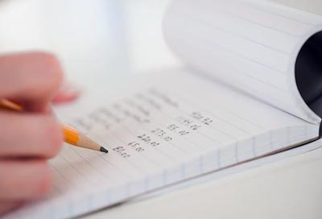
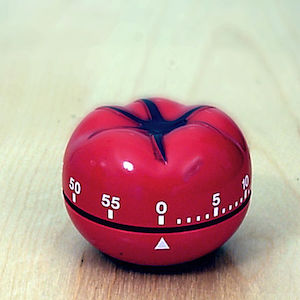

What about 30 day challenge
Today I passed 30 days since I publish 30DayChallenge.changing your habits are a little bit painful, but I’ll explain what I learned in this way. I started by defining a plan for myself that contains a list of things to do and not to do. for example, I decided to read 15 minutes of books each night before the bed, watching a TedTalk every day, do exercise for 10 minutes along the day and more, but the true fact is I just could do some of these items I had in my list. there are more unpredictable reasons why I couldn’t do them. one important thing that I’ve learned is never to choose too many items for your challenge because it will make you exhausted. so I choose 2 primary and useful item from my list to keep continue.
💰 Writing down expenses and incomes
 Writing down your expenses help you have a better sight of your money. when you don’t do this you can’t realize how money you had or spent. I prepare a spreadsheet document in Google Sheets and wrote down my expenses and incomes sorted by Year, Month, Day, Title, Description and Amount. Every time I bought fruit, clothes or event milk for breakfast I wrote down them and I saw the sum of expenses using a math formula called SUM and check how I spent my money since now. I did this for two months and I realized how much money I saved or spent, so I can have a better plan to buy things.
🍅 Using Pomodoro Technique
 I’ve known this technique since I searching for IPP and PDP and reading this blog post. It’s hard to do because you need to focus on what you want to do and you have too many distractions like notifications from Twitter, Instagram , and other social media. so, first of all, make them silent and keep on your work for 20 or 25 minutes ( it’s depend on your energy ) and take 5 or 10-minute rest between each Pomodoro and it will be so helpful for your focus and productivity.
you can read more about Pomodoro technique on Wikipedia.
I will add other items to my challenge when I get ready for it. maybe it takes long but persistence is more important than velocity.